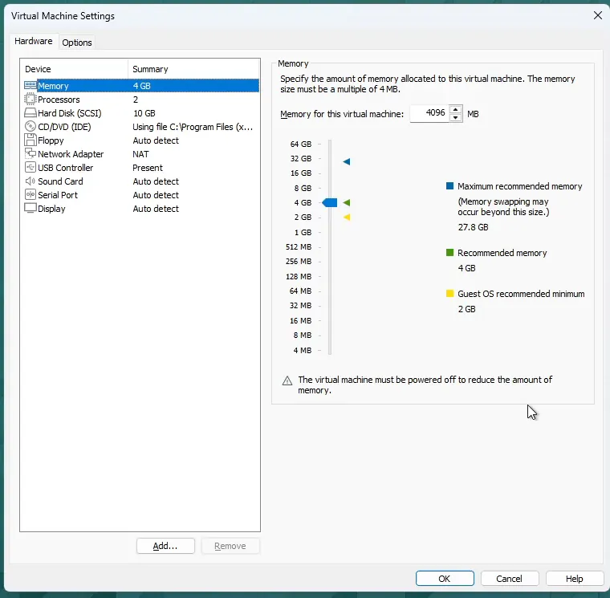
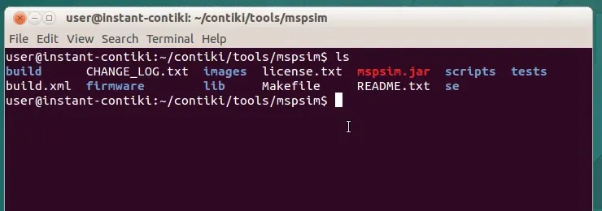
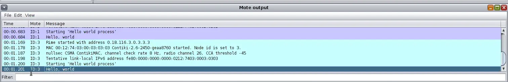
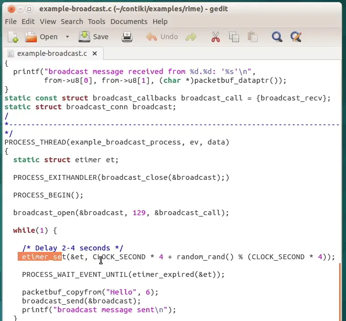
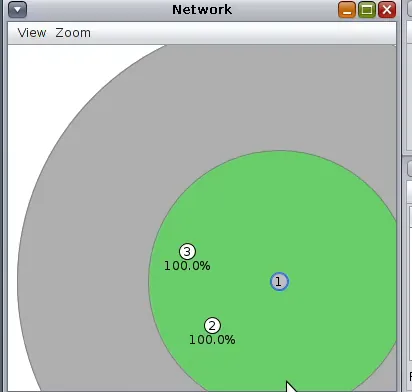
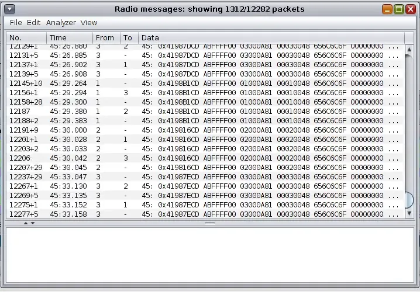
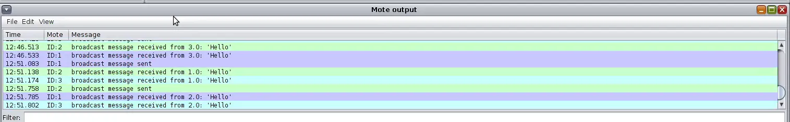
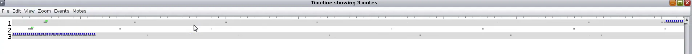

CSE 427 · Wireless Sensor Networks
Yahya Efe Kuruçay · Akdeniz University, Computer Engineering · lab recorded 28 September 2026
The Thursday practice session was replaced by a video submission. The task was to show the VMware installation, the Instant Contiki 3.0 virtual machine and its configuration, and a basic Sky mote project that sends packets while the simulation is running. The week 1 slides add the lab steps: create a Cooja simulation with the Network, Mote output, Timeline and Simulation control windows, compile a Sky mote type from hello-world, run three motes, and save the simulation.
| Component | Value |
|---|---|
| Host | Windows 11 Pro laptop |
| Hypervisor | VMware Workstation Pro 26H1 (free for personal use, from the Broadcom support portal) |
| Guest image | Instant Contiki 3.0 (Ubuntu 14.04, 32-bit) from SourceForge |
| VM configuration | 4 GB RAM, 2 vCPU, NAT network (the image ships with 1 GB and 1 CPU) |
| Toolchain | msp430-gcc 4.7.0, Java 7, Apache Ant 1.9.3 |
| Contiki | ~/contiki, git commit eaa8760 |
| Simulator | Cooja with MSPSim (Sky mote = MSP430 + CC2420, IEEE 802.15.4 at 2.4 GHz) |
Memory and CPUs were raised because Cooja is a Java application and every Sky mote is a full MSP430 emulation.

In the image, tools/mspsim was empty. MSPSim is a git submodule that was never downloaded, so Cooja offered no Sky mote type (the lab notes mention the same symptom: “Could not find the MSPSim build file”). The usual fix, git submodule update --init, failed because the guest’s CA certificates are too old to reach GitHub.
Fix: fetch MSPSim at the commit this Contiki checkout pins (58f1873, read with git ls-tree HEAD tools/mspsim), place it in tools/mspsim, and rebuild Cooja:
cd ~/contiki/tools/cooja
ant jar
tools/mspsim after the fix.New simulation Week1-Hello, radio medium UDGM (Distance Loss), Sky mote type compiled from examples/hello-world/hello-world.c (Cooja runs make hello-world.sky TARGET=sky), three motes.
Each mote prints its boot log (Rime address, nullsec CSMA ContikiMAC) and then Hello, world once. The program prints only at start-up and sends no packets, so this run only proves that the compiler, MSPSim and Cooja work together.

The packet project is Contiki’s Rime broadcast example, examples/rime/example-broadcast.c:
broadcast_open(&broadcast, 129, &broadcast_call) opens a broadcast connection on Rime channel 129. This is a software channel ID, not the 802.15.4 radio channel.etimer_set(&et, CLOCK_SECOND * 4 + random_rand() % (CLOCK_SECOND * 4)) sets the send interval. The comment above it says “2-4 seconds”, but the expression gives 4 to 8 seconds. The random part keeps motes from transmitting in lockstep.PROCESS_WAIT_EVENT_UNTIL sleeps until the timer expires (no busy waiting); then packetbuf_copyfrom("Hello", 6) and broadcast_send transmit the packet.
example-broadcast.c.Simulation Week1-Broadcast: three Sky motes in UDGM, all inside mote 1’s transmission range (green), with the Mote IDs, Radio environment and Radio traffic views enabled.



broadcast message sent is followed by received from lines on the other two motes.11418+36 mean the same frame was sent 36 times in a row. ContikiMAC keeps the radio off most of the time, so a broadcast is repeated for a whole wake-up interval until sleeping neighbours catch it. The payload bytes 48 65 6C 6C 6F are “Hello”.sent; dragging it back restores reception immediately. UDGM has no transitional region, unlike real links — the topic of week 2.
Week1-Hello.csc Week1-Broadcast.csc
Open in Cooja with File → Open simulation. Firmware paths assume Instant Contiki 3.0 with Contiki in /home/user/contiki.